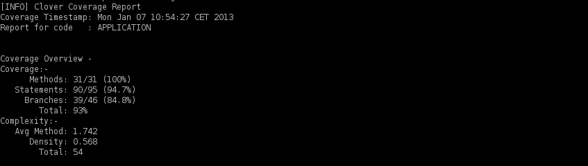
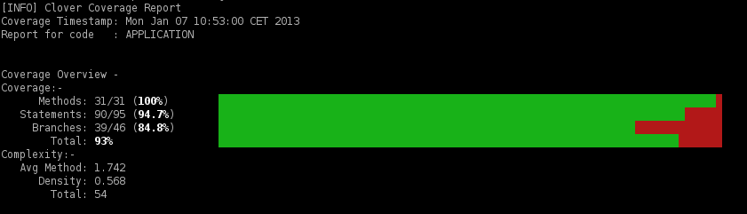

Description
The <clover-log> task reports coverage information to the console at different
levels.
Parameters
| Attribute | Description | Required |
|---|---|---|
| initstring | The |
No; if not specified here, Clover will use the default location
( |
| level | Controls the level of detail included in the report. Valid
values are |
No; defaults to " |
| filter | comma or space separated list of contexts to ignore when calculating coverage. See Using Coverage Contexts. |
No. |
| span | Specifies how far back in time to include coverage recordings from since the last Clover build. See Using Spans. |
No; defaults includes "all coverage data found". |
| codeType | Since 3.1.6: Specifies which sources shall be taken for calculation. This attribute should be used together with <testSources> nested element. Valid values are: APPLICATION (business code), TEST (test code), ALL (business + test code). |
No; Default value: APPLICATION. |
| showUnitTests | Since 3.1.6: Show unit tests summary in the report. Must be used with codeType=ALL or codeType=TEST. | No; Default value: false |
| outputProperty | Since 3.1.6: Name of the Ant property in which a clover-log report will be stored, instead of printing it to console. | No; |
Nested elements
<fileset>
Specifies an Ant fileset. Only these files will be used when generating the clover-log messages and coverage data.
<package>
Specifies a named package to restrict the report to. Multiple <package> elements
can be specified.
Parameters
| Attribute | Description | Required |
|---|---|---|
| name | The name of the package to include. | Yes. |
<sourcepath>
Specifies an Ant path that Clover should use when looking for source files.
<testSources>
Since 3.1.6: Specifies an Ant fileset. These files will be treated as test code (codeType=TEST), all others will be treated as business code (codeType=APPLICATION).
Examples
<clover-log/>Prints a summary of code coverage to the console.
<clover-log>
<package name="com.acme.killerapp.core"/>
</clover-log>Prints a summary of code coverage for the package com.acme.killerapp.core to the console.
<clover-log level="statement">
<package name="com.acme.killerapp.core"/>
</clover-log>Prints detailed (source-level) code coverage information for the package com.acme.killerapp.core
to the console.
<clover-log level="statement" filter="catch">
<package name="com.acme.killerapp.core"/>
</clover-log>As above, but catch blocks will not be considered in coverage reporting.
<clover-log level="statement">
<sourcepath>
<pathelement path="/some/other/location"/>
</sourcepath>
</clover-log>Prints source-level coverage report to the console. Clover will look for source files in the
directory /some/other/location.
<clover-log codeType="APPLICATION">
<fileset dir="src/main/java"/>
<fileset dir="src/main/groovy"/>
<fileset dir="src/test/java"/>
<testSources dir="src/test/java"/>
</clover-log>Collect coverage data from three directories: src/main/java, src/main/groovy and src/test/java. Test sources are located in: src/test/java. Report coverage for business code only (codeType = APPLICATION), i.e. skip files from src/test/java.
Sample output
Example for <clover-log showUnitTests="true" code="ALL".../>
Clover Coverage Report
Coverage Timestamp: Tue May 22 13:21:44 CEST 2012
Report for code : ALL
Coverage Overview -
Coverage:-
Methods: 4/7 (57,1%)
Statements: 8/14 (57,1%)
Branches: 0/0 ( - )
Total: 57,1%
Complexity:-
Avg Method: 1.0
Density: 0.5
Total: 7
Tests:-
Tests number: 2
Tests run: 2
Tests passed: 2
Tests failed: 0
Tests errors: 0
By default, log output is written in plain text, for instance:

but if you have a terminal supporting ANSI colors (Linux, for example) you can use -Dansi.color=true property to get a report like this:
